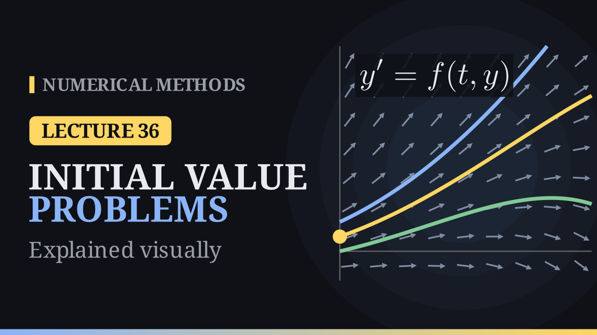

Lecture 36
Initial Value Problems¶

Key results¶
- Initial value problem (IVP): find \(y(t)\) with \(y'=f(t,y)\) for \(t\ge t_0\) and \(y(t_0)=y_0\). The order of an ODE is its highest derivative.
- Integration is the special case \(y'=f(t)\): \(y(b)=y(a)+\int_a^bf(t)\,dt\).
- Direction field: every point \((t,y)\) carries the slope \(f(t,y)\); a solution is a curve tangent to the arrows, and the initial value picks one curve.
- Lipschitz in \(y\): \(|f(t,y_1)-f(t,y_2)|\le L\,|y_1-y_2|\); a bound \(\big|\frac{\partial f}{\partial y}\big|\le L\) on a convex set gives it. With \(f\) continuous and Lipschitz on a strip, the IVP has exactly one solution and is well-posed.
- Failures: \(y'=\sqrt y\), \(y(0)=0\) has infinitely many solutions; \(y'=y^2\), \(y(1)=1\) gives \(y=\frac{1}{2-t}\), which blows up at \(t=2\).
- Systems: an equation of order \(m\) becomes \(m\) first-order equations, \(\mathbf Y'=\mathbf F(t,\mathbf Y)\).
- Numerical solution: values \(y_j\approx y(t_j)\) at \(t_j=t_0+jh\); the global error is \(|y(t_j)-y_j|\).
From integrals to differential equations¶
We can find roots, interpolate, differentiate and integrate. Integration already solves a differential equation: if \(y'=f(t)\) with \(f\) independent of \(y\), then
The new problem starts when \(f\) depends on \(y\) too: then the slope depends on the curve we are looking for.
Ordinary differential equations¶
An ordinary differential equation (ODE) relates an unknown function \(y(t)\) and its derivatives. The order is the highest derivative that appears: \(y'=2t\) has order \(1\), \(y''+y=0\) order \(2\), and \((y')^2-4y=0\) order \(1\) (nonlinear).
Models. Growth and decay \(y'=ky\), with \(y=y_0e^{kt}\). Newton's law of cooling \(T'=-k(T-20)\): coffee at \(T(0)=90^\circ\) in a room at \(20^\circ\), with \(k=0.1\) per minute, is at \(20+70e^{-1}\approx45.8^\circ\) after ten minutes. The pendulum \(\theta''=-\frac gL\sin\theta\).
A family of solutions. Every \(y=t^2+c\) solves \(y'=2t\): a first-order equation alone has a one-parameter family of solutions. The initial value \(y(0)=1\) picks \(c=1\). This is the initial value problem
The direction field¶
At every point \((t,y)\) the equation gives the slope \(f(t,y)\) of the solution through that point. Drawing a short arrow with this slope at every grid point gives the direction field (slope field). For the example of the notes, \(y'=y-t^2+1\): \(f(0,0.5)=1.5\) and \(f(1,2)=2\).
A solution is a curve tangent to the arrows at every point. Here the solutions are \(y=(t+1)^2+Ce^t\) with \(C=y_0-1\):
| \(y(0)\) | solution | \(y(2)\) |
|---|---|---|
| \(0\) | \((t+1)^2-e^t\) | \(1.61\) |
| \(0.5\) | \((t+1)^2-\frac12e^t\) | \(5.3055\) |
| \(1\) | \((t+1)^2\) | \(9\) |
The curves never cross: through every point passes exactly one, so the initial value picks exactly one curve. Two starting values that differ by \(\delta\) stay apart by \(\delta e^t\): the curves spread apart.
None, many or exactly one?¶
- \(|y'|+|y|+1=0\) has no solution, since the left-hand side is at least \(1\).
- \((y')^2=4y\) is solved by every \(y=(t+c)^2\), and also by \(y\equiv0\), which is not in that family.
- \(y'=\sqrt y\), \(y(0)=0\) has infinitely many solutions: \(y\equiv0\), \(y=\frac{t^2}{4}\), and every curve that stays at \(0\) until \(t=a\) and then follows \(\frac{(t-a)^2}{4}\).
- \(y'=y^2\), \(y(1)=1\): separating variables gives \(-\frac1y=t+C\), \(C=-2\), so \(y=\frac{1}{2-t}\). The solution is unique but blows up at \(t=2\) (\(y(1.9)=10\)), although \(f\) is smooth.
Existence, uniqueness and the Lipschitz condition¶
Lipschitz condition. \(f\) is Lipschitz in \(y\) on \(S\) with constant \(L\) if
On every vertical line the slope changes at most \(L\) times the distance. If \(\big|\frac{\partial f}{\partial y}\big|\le L\) on a convex set, the mean value theorem gives the condition with the same \(L\). For \(\sqrt y\), \(\frac{\partial f}{\partial y}=\frac{1}{2\sqrt y}\) is unbounded near \(0\); for \(y^2\), \(\frac{\partial f}{\partial y}=2y\) is unbounded on any strip.
Theorems.
- Local existence. If \(f\) is continuous on \(D=\{|t-t_0|\le a,\ |y-y_0|\le b\}\) and \(M=\max_D|f|\), a solution exists for \(|t-t_0|\le\min(a,b/M)\). Graphically, the solution cannot climb faster than \(M\), so it stays in the cone with slopes \(\pm M\).
- Local uniqueness. If \(\frac{\partial f}{\partial y}\) is continuous on \(D\) as well, the solution is unique.
- Global. If \(f\) is continuous and Lipschitz in \(y\) on the strip \(t_a\le t\le t_b\), \(y\in\mathbb R\), then for any \(t_0\in[t_a,t_b]\) and \(y_0\) the IVP has exactly one solution, on all of \([t_a,t_b]\).
Well-posedness. An IVP is well-posed if a solution exists, is unique, and depends continuously on the data. Under the Lipschitz condition, if \(z'=f(t,z)+\delta(t)\), \(z(t_0)=y_0+\varepsilon_0\) with \(|\varepsilon_0|,|\delta(t)|<\varepsilon\), then
Worked examples¶
Well-posed. \(y'=y-t^2+1\), \(0\le t\le2\), \(y(0)=0.5\). \(f\) is continuous and \(\frac{\partial f}{\partial y}=1\), so \(|f(t,y_1)-f(t,y_2)|=|y_1-y_2|\): \(L=1\) and the problem is well-posed. The solution is \(y=(t+1)^2-\frac12e^t\), with \(y(2)=5.3055\). Starting from \(0.6\) instead, the gap at \(t=2\) is \(0.1e^2=0.739\).
Blow-up. \(y'=y^2\), \(y(1)=1\). Both \(f\) and \(\frac{\partial f}{\partial y}=2y\) are continuous, so the local theorems give a unique solution near \(t=1\). It is \(y=\frac{1}{2-t}\), on \((-\infty,2)\) only. This does not contradict the global theorem: \(2|y|\) is unbounded on every strip, so \(y^2\) is only locally Lipschitz.
Why numerical methods¶
Most IVPs have no formula: \(y'=t^2+y^2\), \(\theta''=-\sin\theta\) and even \(y'=e^{-t^2}\) have no elementary solutions. The curve still exists: for \(y'=t^2+y^2\), \(y(0)=0\), it passes \(y(1)=0.3502\) and blows up near \(t\approx2.003\).
Higher-order equations as systems¶
With \(y_1=\theta\) and \(y_2=\theta'\), the pendulum becomes
or \(\mathbf Y'=\mathbf F(t,\mathbf Y)\), \(\mathbf Y(t_0)=\mathbf Y_0\). An equation of order \(m\) gives \(m\) first-order equations, and every method of this module applies component by component. In the phase plane (\(\theta\) against \(\theta'\)) small swings are closed loops; with \(\frac gL=1\), a swing from \(\theta(0)=1\) has period \(6.70\), longer than \(2\pi\approx6.28\) for tiny swings. Beyond the separatrix the pendulum goes over the top.
What a numerical method produces¶
Choose a step \(h\) and grid points \(t_j=t_0+jh\), \(j=0,1,\dots,N\). A method produces numbers \(y_j\approx y(t_j)\), not a formula. The global error is \(|y(t_j)-y_j|\). For \(y'=y-t^2+1\), \(y(0)=0.5\), \(h=0.5\), the method of the next lecture gives:
| \(j\) | \(t_j\) | \(y_j\) | \(y(t_j)\) | \(\lvert y(t_j)-y_j\rvert\) |
|---|---|---|---|---|
| 0 | 0 | 0.5 | 0.5000 | 0 |
| 1 | 0.5 | 1.25 | 1.4256 | 0.1756 |
| 2 | 1 | 2.25 | 2.6409 | 0.3909 |
| 3 | 1.5 | 3.375 | 4.0092 | 0.6342 |
| 4 | 2 | 4.4375 | 5.3055 | 0.8680 |
With \(h=0.25\) the error at \(t=2\) is \(0.53\), with \(h=0.125\) it is \(0.295\). Each step lands on a neighbouring solution curve and then follows its field; since the curves spread like \(e^t\), early errors are amplified, and well-posedness keeps them bounded.
Check the theory first. A numerical method cannot detect non-uniqueness or blow-up by itself: on \(y'=y^2\), \(y(1)=1\) it marches past \(t=2\) with finite, meaningless numbers, and on \(y'=\sqrt y\), \(y(0)=0\) it stays at \(0\).
Integration vs initial value problems¶
| integration \(y'=f(t)\) | IVP \(y'=f(t,y)\) | |
|---|---|---|
| slope depends on | \(t\) only | \(t\) and \(y\) |
| pieces | independent | each step uses the last |
| errors | simply add up | feed forward |
| nodes | anywhere in \([a,b]\) | march forward from \(t_0\) |
Next lecture: Euler's method. Follow the tangent for one small step, then repeat.